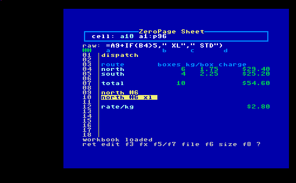
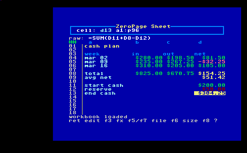
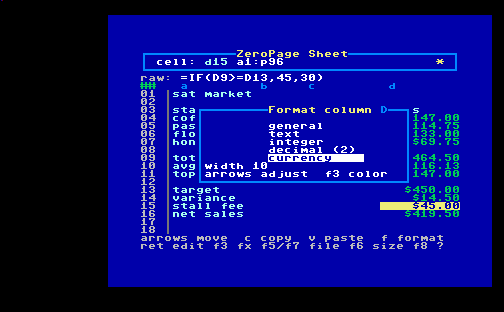

Open a workbook and follow one formula
ZeroPage Sheet is a 40-column Commodore 64 spreadsheet with 1,536 addressable cells, from A1 through P96. The same grid, formula engine, file dialogs, and help browser run from BASIC or inside ReadyOS Precog 0.5. Text, decimal values, currency, and chained formulas share the same workbook.

IF decision, and a rate locked with $D$12.Boot with a 256 KiB or larger REU, press F7, and open ORDERS. Select A10 to see =A9+IF(B4>5," XL"," STD") in the raw bar. Change B4 from 6 to 4 and watch the label and charge update. Press F to see the selected column's format and width. F8 opens the help index.
Download the standalone D64 · Download the workbook disk · App controls and ReadyOS setup
Separate the parts that need different lifetimes
The resident program owns input dispatch, rendering, formula evaluation, and the bridge to the C64 BASIC math ROM. Three smaller programs share one execution window for occasional work. The REU holds raw workbook records, calculation state, save/load staging, inactive code, and help pages. A drive supplies the executable images at first use and stores compact workbooks across power cycles.
| Location | What lives there |
|---|---|
C64 RAM below $A000 | Resident app. BASIC starts the standalone PRG loaded at $0801. ReadyOS loads and enters its PRG at $1000. |
C64 RAM $A000–$BEFF | One active file, help, or editor image. This window sits under BASIC ROM. KERNAL and I/O stay visible during overlay calls. |
| Live REU bank | 48 KiB of 32-byte input records, 9 KiB of tagged formula results, 6 KiB of dependency frames, and workbook settings and colors. |
| Staging REU bank | Temporary workbook records and colors for validation or serialization. |
| Cache REU bank | Three 8 KiB slots for inactive code, plus help pages and a separate area for calculated text. |
region workbook: reu at 0x000000 size 0x010000;
region file_staging: reu at 0x010000 size 0x010000;
region overlay_cache: reu at 0x020000 size 0x010000;
Standalone gives the three roles fixed bank numbers. ReadyOS supplies the physical banks through the app's schema-5 resource adapter. Before switching apps, the hosted build saves its view and clipboard to the live bank. Re-entry reads them and resumes the workbook as long as the app stays loaded. Named regions and image limits · Hosted entry and session state
Read one cell with a typed micromodule
A row and column map to a numeric ID. With 16 columns, the four low bits give the column. A 32-byte record starts at id << 5 and holds a length byte plus up to 31 PETSCII bytes. B3 has zero-based coordinates (2, 1), so its ID is 33 and its record begins at $0420 within the live bank.
fn id(row: u8, col: u8) u16 {
return (@as(u16, row) << 4) | @as(u16, col);
}
fn read(bank: u8, id: u16) void {
dma.fetch(bank, id << 5, 0xc000, 32);
}
store.zp64 imports the small dma.zp64 source library. That helper accepts a runtime bank number and uses inline 6502 assembly in a ZeroPage asm { ... } block to write the REU controller registers.
lda @bank
sta $df06
lda dma_transfer_length
sta $df07
lda dma_transfer_length+1
sta $df08
Here @bank names a ZeroPage byte parameter. The store to $DF06 selects the physical REU bank, and $DF07–$DF08 set the transfer length. Source imports are compiled into the calling image. On a warm render, the grid fetches cached values and reads raw cell text when needed. Source imports · Raw DMA exercise
Keep formula chains off the CPU stack
When a formula refers to another formula, the evaluator saves a compact frame in REU and visits that dependency. It records which cells are being visited to detect cycles, and memoizes finished results. The top frame is copied into C64 scratch when it is needed. A four-byte frame packs the cell ID, token cursor, and the next range member. The 1,536-cell CHAIN workbook evaluates A1 through P96.
fn frame(bank: u8, depth: u16, command: u8) void {
const offset = 0xe400 + (depth << 2);
fn invalidate(bank: u8) void {
dma.clear(bank, 0xc000, 0x2400);
}
The live input is the source of truth. After an edit, the grid recomputes the results it needs. F1 rebuilds the full result cache. The engine keeps an exact 16-bit integer fast path and promotes fractional or large results to the BASIC ROM's five-byte float format. Currency and decimal formatting round the display while dependent formulas still use the cached value. Calling ROM from ZeroPage · Spreadsheet ROM bridge

$304.25.Load occasional code into one shared window
| Disk image entry | Work it handles |
|---|---|
ZSFILE | Load and save dialogs, native workbook serialization, and SimpleCells import. |
ZSHELP | Help, directory browser, column formats, and cell colors. |
ZSEDIT | Cell and formula editing, paste, and fill with adjusted references. |
memory {
image prg {
load_addr = 0xa000;
entry_addr = 0xa000;
basic_stub = false;
address_limit = 0xbf00;
}
}
dma.stash(cache, off, 0xa000, 0x1f00);
meta[0] = 0x3b;
dma.stash(cache, marker, 0xc080, 1);
} else {
dma.fetch(cache, off, 0xa000, 0x1f00);
}
Each of these images is compiled as a small PRG with entry $A000. The resident loader validates the header and size, reads the image once from drive 8, and stashes the bytes in REU. A later call to a different cached image restores it by DMA. Repeating a call to the current image skips the copy. Command and result bytes in a shared C64 mailbox form the interface. The app uses its own fixed-address loading convention. ZeroPage's compiler-managed DLL path adds typed exports and relocations, as shown in the shared DLL window tutorial.

Stage a workbook before replacing live data
A native ZPSH v6 file stores column settings, the view, occupied cells, and explicit colors. Empty cells take no records on disk. Loading first fills a separate staging bank, so a malformed record or missing end marker can be rejected while the open workbook remains editable. Saving copies the live records into the same staging bank and serializes them through a 256-byte C64 buffer.
success = codec.readImage(staging.*);
if (success) {
codec.restoreView();
codec.copyPages(staging.*, live.*);
dma.stash(live.*, 0xfc40, 0xc260, 16);
dma.fetch(live.*, 0xfc40, 0xc310, 16);
}
Help uses a different REU range in the cache bank. Eight 512-byte pages share one C64 buffer. After the help data has been loaded, choosing a topic fetches just that page.
dma.fetch(cache, 0x7000 + (@as(u16, topic) << 9), 0xc100, 512);
Check the behavior and inspect the build
The Peddle fixtures run the compiled formula engine and check results without the UI. The optional VICE plans check keyboard input, formatting, the full-sheet chain, a rejected import, and saved disk bytes. The ReadyOS plan also changes a loaded workbook, switches through the launcher and Editor, then returns to the sheet, edits it again, and saves it.
Compare the resident and overlay .zpmap.json files after a build. The resident image must end below $A000. Each overlay has $BF00 as its exclusive limit. The REU stays in use for data and inactive images while the grid and formula engine stay resident. Inspect generated artifacts · Full-border screenshot gallery